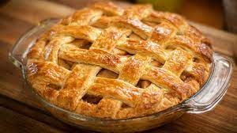

American Apple Pie Recipe

This is THE American Apple Aie
Ingredients
1/3 cup of light brown sugar
1 tablespoon all-purpose flour
1/3 teaspoon ground cinnamon
7 1/2 cups peeled sliced apples
1 9 inch double crust pie
Directions
Prehead oven 425 degrees F. Spray deep dish pie plate
with cooking spray
Combine white sugar, light brown sugar, lemon, cinnamon
and mix well. Add apples and raisins to sugar mixture; stir until well coated.
Spoon apple mixture into pie crust. Place second piecrust on top of filling,
and trim edges. Lightly glaze top of pie with a beaten egg, then sprinkled with
a little sugar.
Bake till golden brown, about 35 to 40 minutes. Place on a wire rack, and cool 30 minutes.
Enjoy!